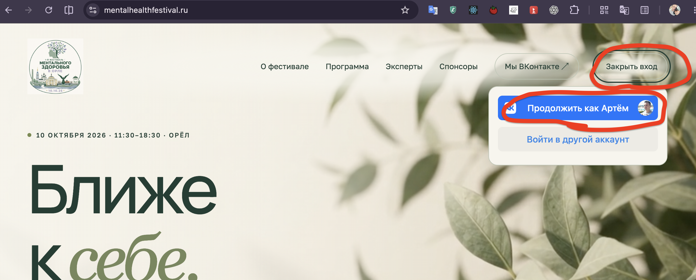
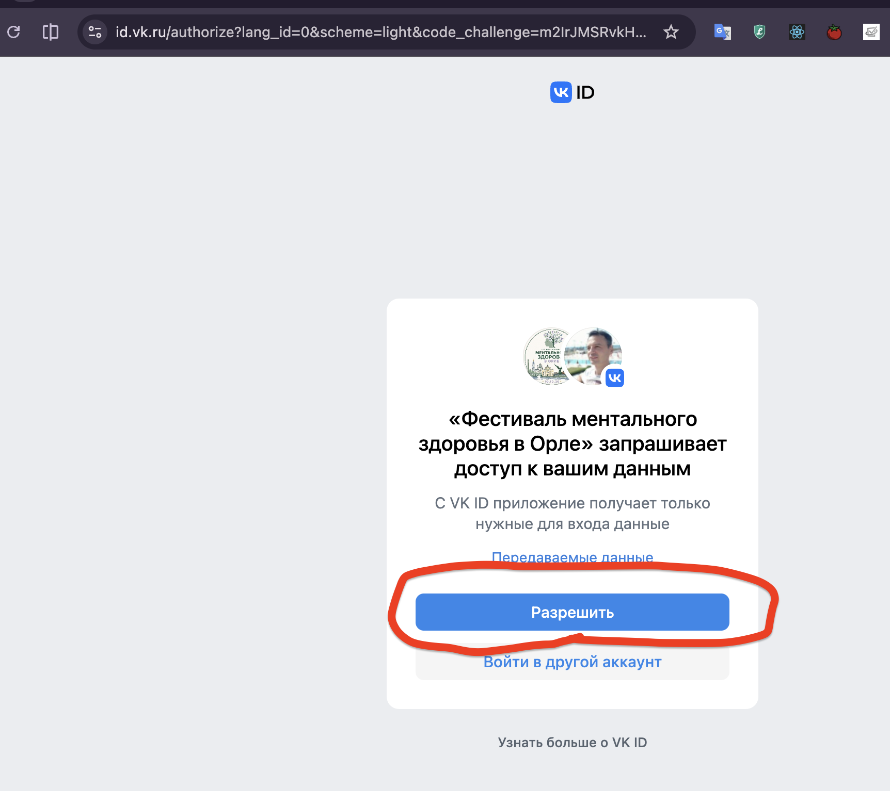
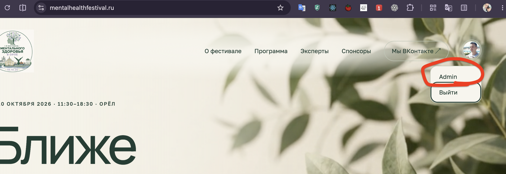
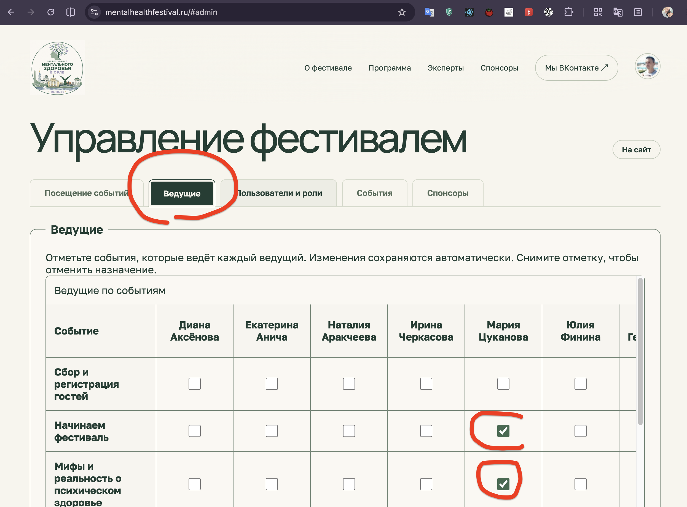
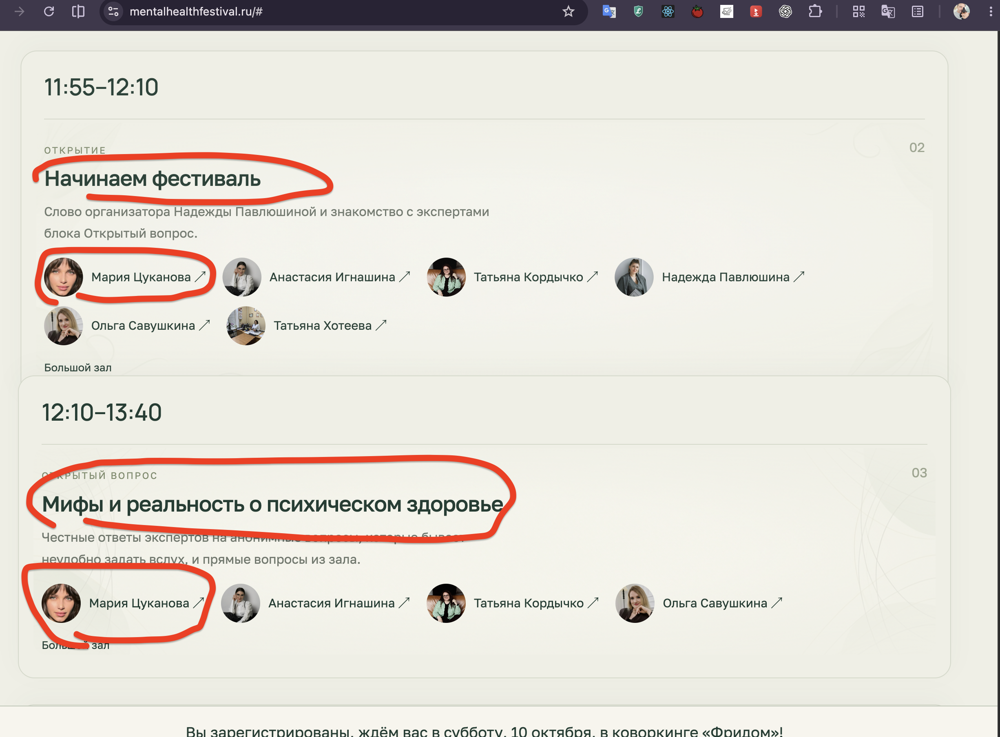

Войдите под своим аккаунтом

Разрешите сайту видеть ваш вк аккаунт

Перейдите в Админку

Перейдите в раздел "Ведущие"
В строках События, в колонках ведущие.
Отмечайте чекбоксами тех ведущих, которых хотите добавить к событию.
Например тут отмечена Мария Цуканова как ведущая двух событий

Как только вы поставили или сняли галочку, изменения будут сохранены автоматически
Вот как это выглядит на сайте
